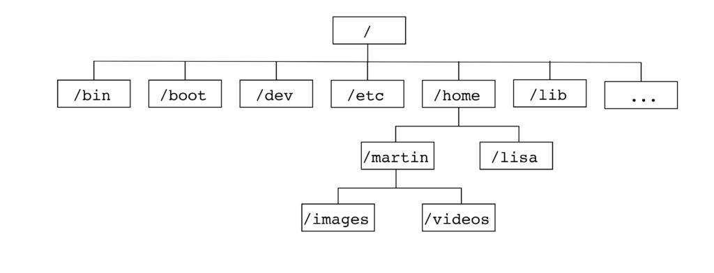
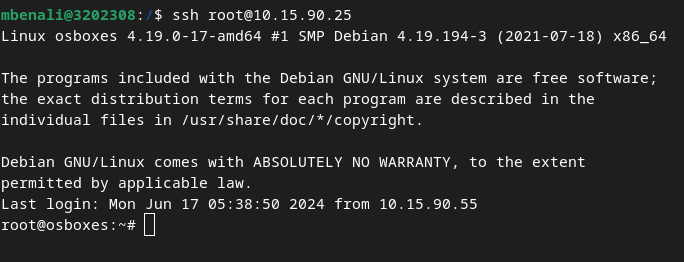
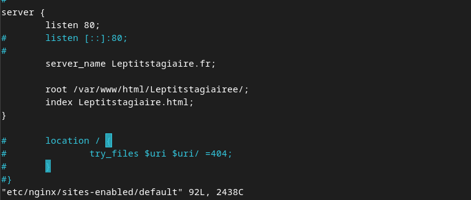
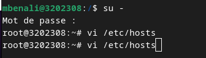
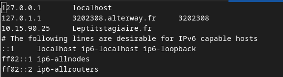
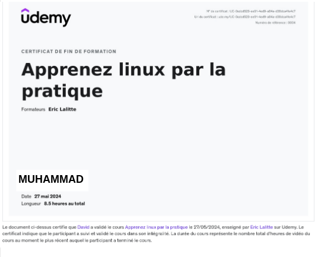

BIENVENUE SUR MON SITE
Ceci est un résumé de ma formation fait dans l'entreprise d'Alterway Smile.
Ce Site est le premier que je configure dans un serveur web nginx.
L'ARBORESCENCE TYPE DE LINUX :

SSH
SSH (Secure Shell) est un protocole réseau qui permet de se connecter de manière sécurisée à un ordinateur distant.
Quelques commandes SSH :
- ssh user@hostname : Se connecter à une machine distante
- ssh-keygen : Générer une paire de clés SSH
- ssh-copy-id user@hostname : Copier une clé publique vers une machine distante
Exemple de la commande :

On voit bien qu'ici je suis connecté sur ma machine virtuel en SSH
Serveur Web
Les serveurs web permettent de servir des pages web aux utilisateurs. Les plus courants sont Apache et Nginx.
Quelques commandes et concepts de base :
- apachectl start : Démarrer le serveur Apache
- systemctl start nginx : Démarrer le serveur Nginx
- DocumentRoot : Le répertoire où sont stockés les fichiers du site web
INSTALLATION D'UN SERVEUR WEB
APACHE 2
apt cache ... : servant à chercher tout les packs apache2 php
 apt install ... : Après avoir fait une recherche sur internet voici la ligne de commande permettant d'installer apache2 /php/mysql
apt install ... : Après avoir fait une recherche sur internet voici la ligne de commande permettant d'installer apache2 /php/mysql

NGINX
apt install nginx : Voici la ligne de commande simple pour installer nginx

Configuration d'un serveur web
A l'aide de la commande cat /etc/nginx on va pourvoir se balader dans les fichiers de configuraitons afin de configurer notre serveur web
cat /etc/nginx/sites-enabled/default : Voici la ligne de commande simple pour configurer nginx et ça se passe dans le dossier etc

Le fichier n'est pas présent dans son intégralité mais vous voyez le genre
Exemple de la config du site LePtitstagiaire :

Dans cete config on voit que j'ai attribué un nom sur le serveur et lui ai indiqué le chemin pour ouvrir ma page web
Pour accéder au site on a juste a tapper le nom qu'on a attribué au préalable dans la commande qui nous permet de lier l'adresse ip de la MV à un nom.
Exemple ci-dessous :


On voit bien sur la ligne 10.15.90.25 suivi du nom de notre serveur web
Git/GitHub
Git est un système de contrôle de version distribué. GitHub est une plateforme d'hébergement de dépôts Git.
Quelques commandes Git de bases :
- git init : Initialiser un nouveau dépôt Git
- git clone url : Cloner un dépôt distant
- git add : Ajouter des fichiers à l'index
- git commit -m "message" : Enregistrer les changements avec un message
- git push : Envoyer les modifications vers le dépôt distant
Mes Certifications
Voici notamment ma première certification obtenue du stage :

Elle m'a été très utile car elle permet d'avoir de bonnes bases pour la suite du stage et elle reste indispensable
J'en ai également une deuxième en cours sur l'outil Git/GitHub :